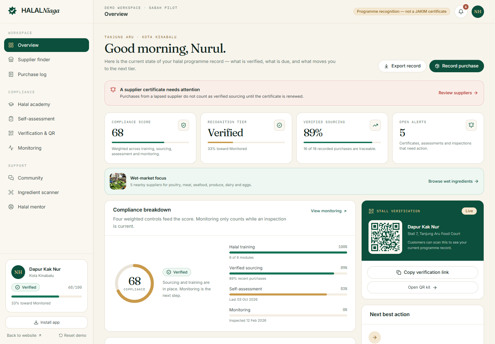
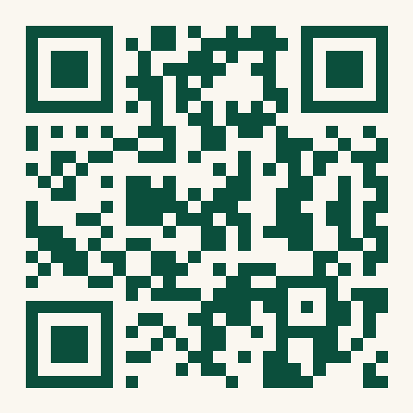
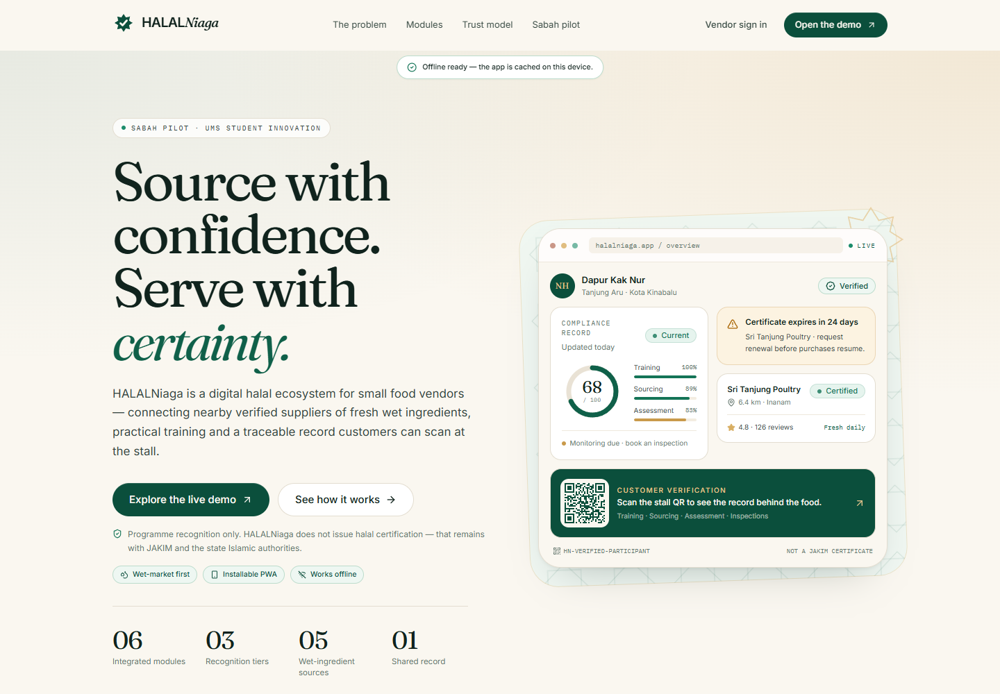
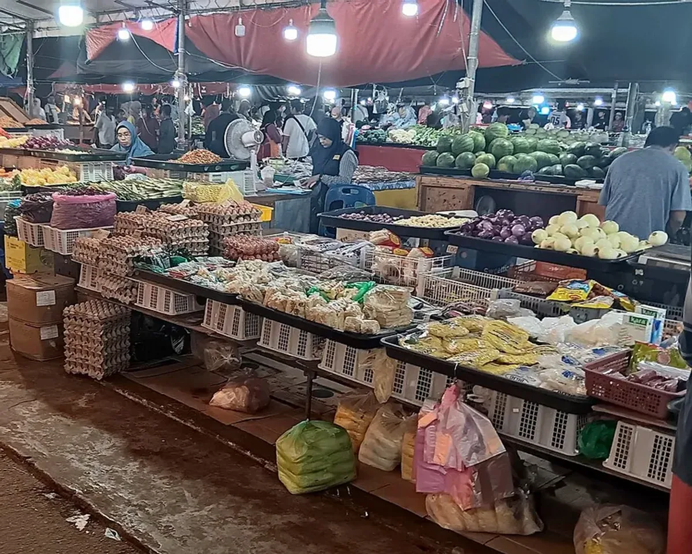
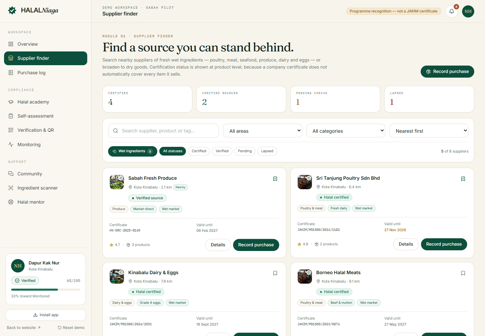
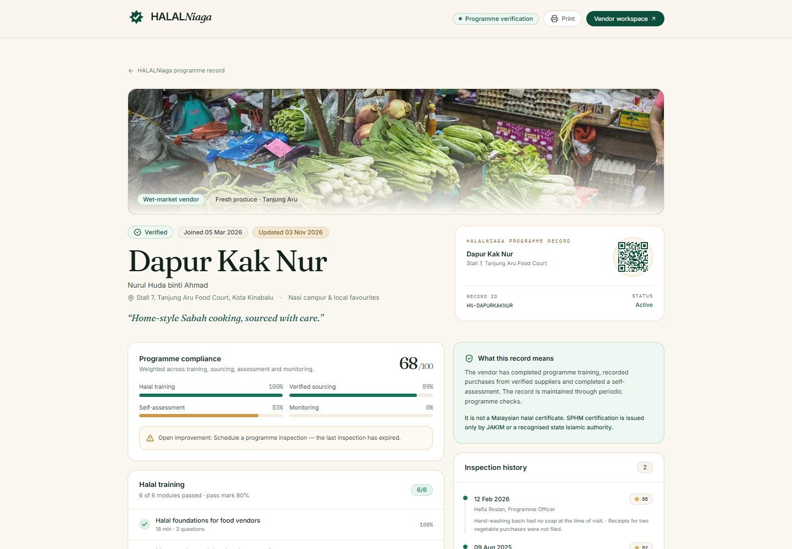
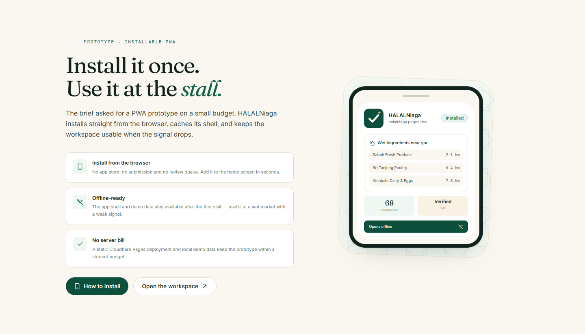
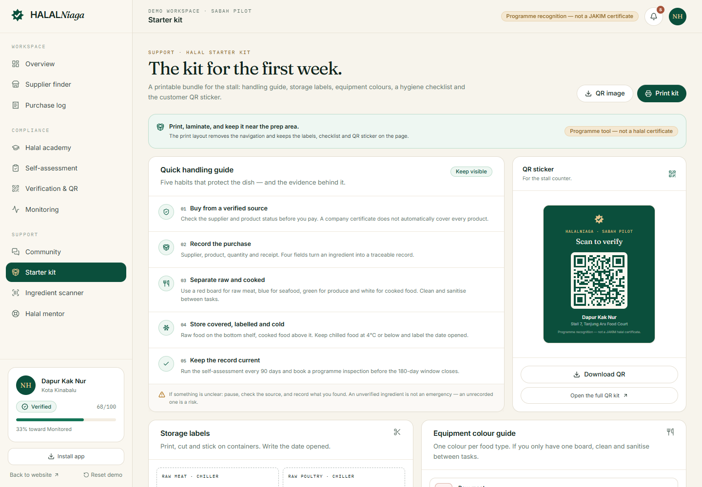

Membantu peniaga mendapatkan bekalan bahan basah yang disahkan berdekatan, melengkapkan latihan halal, dan menerbitkan rekod yang boleh diimbas pelanggan di gerai.


Imbas untuk membuka demo langsung halalniaga.pages.dev
HALALNiaga ialah ekosistem digital untuk peniaga makanan kecil: penjaja, gerai, food truck, katerer dan peniaga pasar malam. Ia menggabungkan pencarian pembekal bahan basah yang disahkan, latihan halal, rekod pembelian, penilaian kendiri dan pengiktirafan program.
Prototaip ini dibina sebagai PWA: boleh dipasang dari pelayar, berfungsi offline selepas lawatan pertama, dan menggunakan data demo setempat. Tiada backend, pembayaran atau akaun sebenar diperlukan.
Pembekal berdekatan, status produk dan sijil pada satu skrin.
Rekod belian, latihan dan penilaian menjadi satu jejak bukti.
QR gerai memaparkan rekod program yang boleh disemak pelanggan.

Peniaga kecil mahu melakukan perkara yang betul. Yang tiada ialah cara praktikal untuk membuktikan apa yang sudah mereka lakukan — dan langkah seterusnya apabila ada yang tertinggal.
Sijil tersimpan dalam laci atau e-mel, jarang berada di tempat keputusan pembelian dibuat.
Ramai masih menganggap halal hanya “tiada babi, tiada alkohol”, tanpa melihat penyembelihan, penyimpanan dan pengasingan.
Gerai kecil menganggap proses rasmi terlalu rumit atau mahal untuk diterokai.
Tanpa resit atau rujukan pembekal, tiada siapa boleh membuktikan asal ayam, ikan atau sayur.
Papan, pisau dan minyak yang dikongsi jarang didokumenkan atau diperbetulkan.
Ayam, ikan, sayur dan telur dibeli beberapa kali seminggu, kadangkala dari gerai berbeza. Rekod bulanan tidak mampu mengejar pasar basah.
Pendirian reka bentuk projek
HALALNiaga bukan direktori pembekal. Ia menghubungkan peniaga, pembekal dan pihak bimbingan dalam satu rekod yang sama.
Membeli bahan basah, memasak dan menghidang. Sistem merekod bukti di sepanjang kerja harian.
Menerbitkan status halal pada peringkat produk dan sampai kepada gerai kecil berdekatan.
Melatih, menasihati, memeriksa dan mengiktiraf mengikut tangga yang jelas.
Sijil dan status produk direkodkan.
Beli, rekod, masak dan simpan dengan betul.
Imbas QR dan lihat rekod program.
Pihak program menyokong rantaian ini melalui latihan, penilaian kendiri, pemeriksaan dan pengiktirafan. HALALNiaga merekod dan memantau — ia tidak mengeluarkan sijil halal.
Pematuhan dinilai berdasarkan bukti, bukan identiti. Pensijilan halal Malaysia terbuka kepada pengusaha Muslim dan bukan Muslim yang memenuhi syarat. Rekod ini direka untuk menyokong pematuhan, bukan menggantikan proses rasmi.

Latihan, sumber, penilaian dan pemeriksaan berhenti hidup dalam buku nota berasingan. Setiap modul menyumbang kepada rekod yang sama.
Cari pembekal bahan basah berdekatan; tapis status sijil dan produk.
Enam modul pendek, kuiz 80% lulus, sijil tamat latihan program.
Setiap belian menjadi bukti: pembekal, produk, kuantiti dan resit.
Lapan soalan berwajaran, tindakan pembetulan, sah 90 hari.
Profil awam untuk pelanggan: latihan, sumber, penilaian dan pemeriksaan.
Tiga tahap, pemeriksaan program dan penilaian semula berkala.

Enam langkah. Setiap langkah menambah bukti ke rekod yang sama — tanpa menambah satu lagi ritual kertas.
Satu rekod yang menjawab: siapa pembekalnya, apa yang dibeli, bila, dan apa buktinya. Rekod ini boleh disemak semula semasa pemeriksaan.
Label storan, panduan warna peralatan, senarai semak kebersihan dan pelekat QR — semuanya boleh dicetak dari dalam aplikasi.
/app/starter-kit
Pelanggan tidak perlu memasang aplikasi atau mencipta akaun. Pelekat QR di gerai membuka rekod program dalam pelayar.
Kamera telefon membuka pautan rekod.
Tahap, latihan, sumber dan tarikh semakan.
Pembekal disahkan, penilaian dan pemeriksaan.
Keputusan dibuat dengan maklumat, bukan logo semata-mata.

Rekod ini menyatakan pengiktirafan program dan tarikh semakan. Sijil halal rasmi kekal dengan JAKIM atau pihak berkuasa agama negeri.
Tahap bukan label kekal. Bukti yang menyokongnya boleh luput — dan rekod menunjukkan bila ia perlu diperbaharui.
Semua enam modul lulus pada 80% atau lebih.
Sijil tamat latihan program
Learner + 80% pembelian terkini daripada sumber disahkan + penilaian kendiri 80% dalam 90 hari.
Lencana + QR gerai
Verified + pemeriksaan program lulus dalam 180 hari + penilaian semula dalam kitaran semasa.
Lencana pemantauan + tarikh pemeriksaan
HALALNiaga tidak mengeluarkan sijil halal, tidak menggunakan logo halal Malaysia, dan tidak menggantikan pemeriksaan JAKIM atau pihak berkuasa agama negeri. Setiap rekod QR menyatakan perkara ini.
Rujukan rasmi: JAKIM Halal Malaysia · halal.gov.my
| Tahap | Syarat utama | Pengiktirafan |
|---|---|---|
| Learner | 6/6 modul lulus · kuiz ≥ 80% | Sijil tamat latihan |
| Verified | Learner + sumber ≥ 80% + penilaian ≥ 80% | Lencana + QR |
| Monitored | Verified + pemeriksaan lulus ≤ 180 hari | Lencana pemantauan |
Kemas kini setiap kitaran.
Pemeriksaan program semasa.
Semak tarikh luput pada setiap belian.
Brief meminta prototaip PWA dengan bajet terhad. HALALNiaga dipasang dari pelayar, menyimpan shell aplikasi dan kekal boleh digunakan apabila isyarat lemah di pasar.
Tiada app store, tiada proses semakan. Tambah ke skrin utama dalam beberapa saat.
Shell aplikasi dan data demo kekal selepas lawatan pertama.
Static hosting di Cloudflare Pages, data setempat, tiada backend atau pembayaran.

React · Vite
Workbox precache
Rekod demo setempat
Hosting: Cloudflare Pages · static assets · SPA fallback.
Masa depan: D1/Workers, auth, supplier onboarding, integrasi direktori JAKIM.
Menu ⋮ → Install app / Add to Home screen.
Share → Add to Home Screen.
Ikon install di address bar.
Mula: Aplikasi yang dipasang terus membuka workspace peniaga (/app), bukan landing page.
Nota: Prototaip ini tiada backend, pembayaran, e-mel atau integrasi pembekal sebenar. Data disimpan dalam pelayar peranti.
Ayam, ikan, sayur, telur dan susu dibeli beberapa kali seminggu dan bertukar pembekal. Ia kategori paling sukar dijejaki — dan paling penting untuk dipantau.
2 sumber
1 sumber
1 sumber
1 sumber
Butang Wet ingredients menapis lima pembekal bahan basah. Senarai disusun nearest first, dengan jarak dan tanda “Nearby” untuk sumber dalam 5 km.
/app/suppliers?wet=1
Demo menggunakan vendor contoh Dapur Kak Nur dan data pilot. Tiada pendaftaran sebenar diperlukan.
| Landing | halalniaga.pages.dev |
| Workspace | /app |
| Bahan basah | /app/suppliers?wet=1 |
| Rekod awam | /vendor/dapur-kak-nur |
| Starter kit | /app/starter-kit |
nurul@dapurkaknur.my
demo1234
Mana-mana e-mel/kata laluan akan membuka workspace demo. Tiada kredensial dihantar ke server.
Sidebar → Reset demo untuk memulihkan data asal selepas pembentangan.
Imbas untuk membuka demo
halalniaga.pages.dev

Tip pembentangan: mulakan dengan rekod awam, kemudian tunjukkan bagaimana setiap modul menyumbang kepada rekod yang sama. Akhiri dengan starter kit — bukti fizikal yang boleh dibawa pulang.
Prototaip ini menunjukkan model perkhidmatan dan aliran pengguna. Ia bukan sistem pematuhan produksi, dan ia tidak membuat keputusan pensijilan.
Sijil Halal Malaysia (SPHM) dikeluarkan oleh JAKIM atau pihak berkuasa agama Islam negeri yang diiktiraf. HALALNiaga menyokong perjalanan ke arah pematuhan — ia tidak menggantikan proses rasmi.
halalniaga.pages.dev
Inovasi pelajar UMS · Sabah pilot 2026
halalniaga.pages.dev · tiada akaun diperlukan.
Imej pasar: Wikimedia Commons — Bahnfrend (CC BY-SA 4.0), CEphoto/Uwe Aranas (CC BY-SA 3.0), Francisco Anzola (CC BY 3.0). Kredit penuh di /credits. Tangkapan skrin: prototaip HALALNiaga. Logo dan antara muka adalah asli untuk projek ini.